<!DOCTYPE html>
<html lang="en"><head><meta charset="utf-8">
<meta name="viewport" content="width=device-width, initial-scale=1">
<title>Opportunities — Startupreneur Innovation Hub</title>
<link rel="stylesheet" href="../innovation-hub.css">
<style>
  html,body{height:100%;margin:0;overflow:hidden}
  .viewer{display:grid;grid-template-columns:340px 1fr;height:100vh;overflow:hidden}
  .vw-list{display:flex;flex-direction:column;height:100vh;overflow:hidden;border-right:1px solid var(--border);background:var(--surface);min-width:0}
  .vw-head{flex:0 0 auto;padding:16px 18px 12px;border-bottom:1px solid var(--border)}
  .vw-head .vw-brand{display:flex;align-items:center;gap:8px;font-weight:700;font-size:.95rem;margin-bottom:8px}
  .vw-head .vw-brand::before{content:"";width:18px;height:18px;border-radius:6px;background:var(--grad-tile);box-shadow:0 2px 6px rgba(224,76,33,.3)}
  .vw-head h1{font-size:1.15rem;margin:0;letter-spacing:-.01em}
  .vw-head p{margin:4px 0 0;font-size:.8rem;color:var(--text-subtle)}
  .vw-back{display:inline-flex;align-items:center;gap:5px;margin-bottom:10px;font-size:.78rem;font-weight:600;color:var(--text-subtle);text-decoration:none}
  .vw-back:hover{color:var(--brand-red)}
  .vw-search{flex:0 0 auto;margin:12px 18px 8px;padding:9px 12px;border:1px solid var(--border);border-radius:10px;font:inherit;font-size:.88rem;background:var(--bg);color:var(--text)}
  .vw-filters{flex:0 0 auto;display:flex;gap:8px;margin:0 18px 8px}
  .vw-sel{flex:1;min-width:0;padding:8px 10px;border:1px solid var(--border);border-radius:10px;font:inherit;font-size:.8rem;background:var(--bg);color:var(--text);cursor:pointer}
  .vw-count{flex:0 0 auto;margin:0 18px 8px;font-size:.74rem;color:var(--text-subtle)}
  .vw-nav{overflow-y:auto;padding:4px 10px 24px;flex:1 1 auto;min-height:0}
  .vw-empty{padding:18px;font-size:.85rem;color:var(--text-subtle)}
  .vw-group{margin:14px 8px 6px;font-size:.7rem;font-weight:700;letter-spacing:.06em;text-transform:uppercase;color:transparent;background:var(--grad);-webkit-background-clip:text;background-clip:text;width:fit-content}
  .vw-item{display:flex;align-items:center;gap:10px;width:100%;height:56px;text-align:left;border:0;background:transparent;color:var(--text);padding:0 10px;border-radius:9px;cursor:pointer;font:inherit;line-height:1.25}
  .vw-item:hover{background:var(--surface-2)}
  .vw-item.active{background:var(--red-soft);color:var(--brand-red)}
  .vw-thumb{flex:none;width:38px;height:38px;border-radius:8px;border:1px solid var(--border);background:var(--surface-2);overflow:hidden;display:flex;align-items:center;justify-content:center}
  .vw-thumb img{width:100%;height:100%;object-fit:contain;padding:3px;box-sizing:border-box}
  .vw-text{min-width:0;flex:1}
  .vw-item .vw-name{display:block;font-size:.88rem;font-weight:600;white-space:nowrap;overflow:hidden;text-overflow:ellipsis}
  .vw-item .vw-sub{display:block;font-size:.74rem;color:var(--text-subtle);white-space:nowrap;overflow:hidden;text-overflow:ellipsis}
  .vw-item.active .vw-sub{color:var(--brand-red)}
  .vw-frame{border:0;width:100%;height:100vh;background:var(--bg)}
  @media(max-width:760px){html,body{overflow:auto}.viewer{grid-template-columns:1fr;height:auto;overflow:visible}.vw-list{height:auto;overflow:visible;border-right:0;border-bottom:1px solid var(--border)}.vw-nav{max-height:44vh}.vw-frame{height:70vh}}
</style></head>
<body>
<div class="viewer">
  <aside class="vw-list">
    <div class="vw-head">
      <a class="vw-back" href="../index.html">← Innovation Hub</a>
      <div class="vw-brand">Startupreneur</div>
      <h1>Opportunities</h1>
      <p>20 programs · production set (July 2026)</p>
    </div>
    <input class="vw-search" id="vwSearch" type="search" placeholder="Search 20 entries…" oninput="vwApply()">
    <div class="vw-filters"><select class="vw-sel" id="vwF1" onchange="vwApply()"><option value="">All categories</option><option value="Grant / Fund">Grant / Fund</option><option value="Programs">Programs</option><option value="Competition">Competition</option></select><select class="vw-sel" id="vwF2" onchange="vwApply()"><option value="">All coverage</option><option value="Regional">Regional</option><option value="National">National</option><option value="International">International</option></select></div>
    <div class="vw-count" id="vwCount"></div>
    <nav class="vw-nav" id="vwNav">
      <div class="vw-group">Grant / Fund · 1</div>
      <button class="vw-item has-rem" data-src="startup-grant-fund-dost-pcaarrd.html" data-k="startup grant fund (sgf) — dost-pcaarrd (aanr sector) grant / fund national" data-f1="Grant / Fund" data-f2="National" title="Startup Grant Fund (SGF) — DOST-PCAARRD (AANR sector)

⚠ Internal remarks (not shown on the page):
• ⚠️ Projection based on prior cycles — verify against the official link before relying on it.
• Fit for Startupreneur students: Moderate (graduation-target for agri/aqua teams). Among the most accessible government grants here for student-founded ventures, but it requires a registered/near-registered company and a genuine AANR technology to commercialize — a strong target for alumni te"><span class="vw-thumb">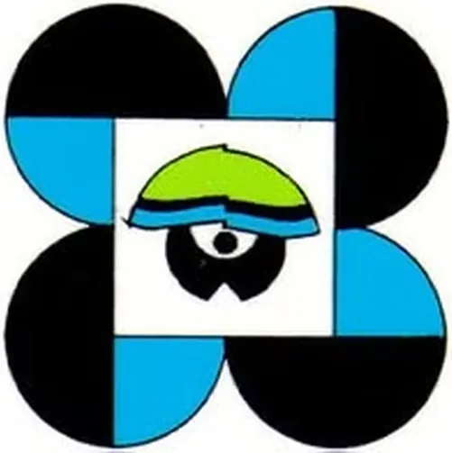</span><span class="vw-text"><span class="vw-name">Startup Grant Fund (SGF) — DOST-PCAARRD (AANR sector)<span class="vw-flag" aria-label="has internal remarks">⚠</span></span><span class="vw-sub">National</span></span></button>
      <div class="vw-group">Programs · 2</div>
      <button class="vw-item has-rem" data-src="plug-and-play-apac.html" data-k="plug and play apac programs international" data-f1="Programs" data-f2="International" title="Plug and Play APAC

⚠ Internal remarks (not shown on the page):
• ⚠️ Confirm the current Horizon Philippines / sector call.
• Fit for Startupreneur students: Moderate–graduation target. Best for startups with a product and corporate-pilot potential."><span class="vw-thumb"></span><span class="vw-text"><span class="vw-name">Plug and Play APAC<span class="vw-flag" aria-label="has internal remarks">⚠</span></span><span class="vw-sub">International</span></span></button>
      <button class="vw-item has-rem" data-src="youth-co-lab-springboard.html" data-k="youth co:lab springboard programs international" data-f1="Programs" data-f2="International" title="Youth Co:Lab Springboard

⚠ Internal remarks (not shown on the page):
• ⚠️ Philippine edition timing must be verified directly.
• Verified July 9, 2026. Age floor confirmed to VARY by country edition (15+ in some, 18+ in others) — flagged rather than assumed.
• Fit for Startupreneur students: Excellent, and uniquely broad. With the 15–30 age band confirmed, Youth Co:Lab covers senior high, college, and young alumni in one programme — no other entry does that. It is UNDP-backed, Asia-Pacific in scope with the Philippines included, non-dilutive, and "><span class="vw-thumb">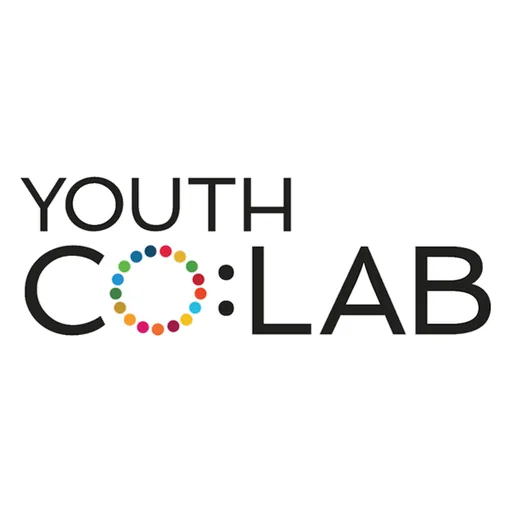</span><span class="vw-text"><span class="vw-name">Youth Co:Lab Springboard<span class="vw-flag" aria-label="has internal remarks">⚠</span></span><span class="vw-sub">International</span></span></button>
      <div class="vw-group">Competition · 17</div>
      <button class="vw-item" data-src="test-regional-opportunity-region-i.html" data-k="[test] regional opportunity — region i competition regional · region i" data-f1="Competition" data-f2="Regional" title="[TEST] Regional Opportunity — Region I"><span class="vw-thumb"></span><span class="vw-text"><span class="vw-name">[TEST] Regional Opportunity — Region I</span><span class="vw-sub">Regional · Region I</span></span></button>
      <button class="vw-item" data-src="test-regional-opportunity-region-ii.html" data-k="[test] regional opportunity — region ii competition regional · region ii" data-f1="Competition" data-f2="Regional" title="[TEST] Regional Opportunity — Region II"><span class="vw-thumb"></span><span class="vw-text"><span class="vw-name">[TEST] Regional Opportunity — Region II</span><span class="vw-sub">Regional · Region II</span></span></button>
      <button class="vw-item" data-src="test-regional-opportunity-region-iii.html" data-k="[test] regional opportunity — region iii competition regional · region iii" data-f1="Competition" data-f2="Regional" title="[TEST] Regional Opportunity — Region III"><span class="vw-thumb"></span><span class="vw-text"><span class="vw-name">[TEST] Regional Opportunity — Region III</span><span class="vw-sub">Regional · Region III</span></span></button>
      <button class="vw-item has-rem" data-src="aim-agri-aqua-innovation-challenge-student-teams.html" data-k="aim agri-aqua innovation challenge — student teams competition national" data-f1="Competition" data-f2="National" title="AIM Agri-Aqua Innovation Challenge — Student Teams

⚠ Internal remarks (not shown on the page):
• ⚠️ Verify figures and dates when the next call is published.
• Verified July 9, 2026 against AIM&#x27;s official pages.
• 💡 This is the actionable lever. A Serial Disruptors partner school with an accredited agri-aqua TBI can endorse student teams directly into this challenge, and earns PHP 50,000 per incubatee reaching the finals. Cross-reference the Innovation Centers database 
• Fit for Startupreneur students: Excellent for college teams — arguably the best national fit. Filipino-only (so the field is domestic, not global), non-dilutive, real money (PHP 400K grand / PHP 100K per finalist), open to students of any school, and at a low technology bar (TRL 4). The ATBI"><span class="vw-thumb">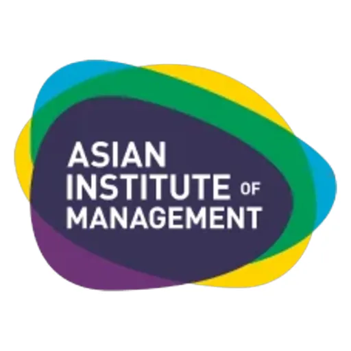</span><span class="vw-text"><span class="vw-name">AIM Agri-Aqua Innovation Challenge — Student Teams<span class="vw-flag" aria-label="has internal remarks">⚠</span></span><span class="vw-sub">National</span></span></button>
      <button class="vw-item has-rem" data-src="blue-ocean-student-entrepreneur-competition.html" data-k="blue ocean student entrepreneur competition competition international" data-f1="Competition" data-f2="International" title="Blue Ocean Student Entrepreneur Competition

⚠ Internal remarks (not shown on the page):
• ⚠️ Exact prize amounts could not be confirmed from a primary source. Verify before quoting figures to students.
• ⚠️ Verify the current cycle&#x27;s deadline on the official site.
• Verified July 9, 2026. Ages 14–18 and high-school enrolment confirmed; prize amounts not primary-sourced.
• Fit for Startupreneur students: Outstanding for BED — arguably the lowest-friction international competition in this entire database. High-school-only (no college teams to beat), fully virtual (no airfare, no visa), global scale, and non-dilutive. There is essentially no structural barrier b"><span class="vw-thumb">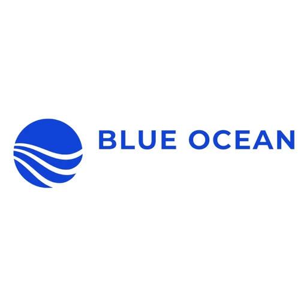</span><span class="vw-text"><span class="vw-name">Blue Ocean Student Entrepreneur Competition<span class="vw-flag" aria-label="has internal remarks">⚠</span></span><span class="vw-sub">International</span></span></button>
      <button class="vw-item has-rem" data-src="conrad-challenge.html" data-k="conrad challenge competition international" data-f1="Competition" data-f2="International" title="Conrad Challenge

⚠ Internal remarks (not shown on the page):
• ⚠️ Prize composition varies by cycle — verify current amounts before promoting specific figures.
• ⚠️ Verify the current cycle&#x27;s dates — rounds close early.
• Verified July 9, 2026 against the official Student Guide. Ages 13–18, teams of 2–5 plus adult coach, open worldwide.
• Fit for Startupreneur students: Excellent for BED teams with a STEM angle. Age 13–18, worldwide entry, adult-coach structure that maps onto a teacher-led classroom, and a multi-round format that mirrors the Startupreneur curriculum&#x27;s own build-and-pitch arc. Stronger for science/engineering "><span class="vw-thumb">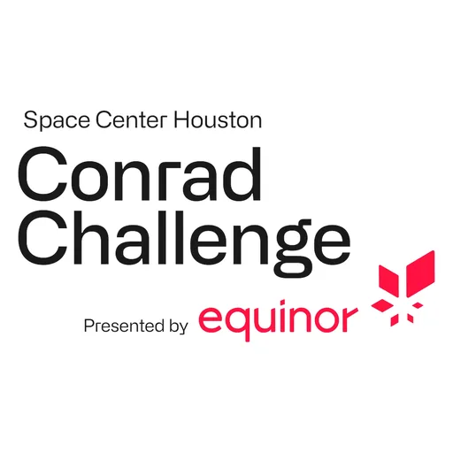</span><span class="vw-text"><span class="vw-name">Conrad Challenge<span class="vw-flag" aria-label="has internal remarks">⚠</span></span><span class="vw-sub">International</span></span></button>
      <button class="vw-item has-rem" data-src="diamond-challenge.html" data-k="diamond challenge (high school entrepreneurship) competition international" data-f1="Competition" data-f2="International" title="Diamond Challenge (High School Entrepreneurship)

⚠ Internal remarks (not shown on the page):
• ⚠️ Verify the current prize pool per cycle — amounts have changed year to year.
• ⚠️ Confirm on the official site.
• Verified July 9, 2026. Age bracket (14–18), team size (2–4), and the adult-advisor requirement confirmed against the official competition page.
• 🎓 HIGH SCHOOL ELIGIBLE. Unlike Hult Prize, James Dyson, HKUST, and TigerLaunch — all of which require university enrolment — the Diamond Challenge is built for students aged 14–18 . This is directly addressable by Serial Disruptors&#x27; Basic Education (BED) categ
• Fit for Startupreneur students: Outstanding — this is the single best fit for the BED category found so far. Age-gated at 14–18 rather than institution-gated, requires an adult advisor (a role a Startupreneur teacher fills naturally), idea-stage rather than traction-stage, and completely fre"><span class="vw-thumb">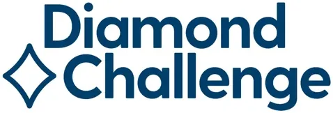</span><span class="vw-text"><span class="vw-name">Diamond Challenge (High School Entrepreneurship)<span class="vw-flag" aria-label="has internal remarks">⚠</span></span><span class="vw-sub">International</span></span></button>
      <button class="vw-item has-rem" data-src="disruptorx-serial-disruptors-national-student-pitch-competition.html" data-k="disruptorx — serial disruptors national student pitch competition competition national" data-f1="Competition" data-f2="National" title="DisruptorX — Serial Disruptors National Student Pitch Competition

⚠ Internal remarks (not shown on the page):
• Internal figures drawn from the Serial Disruptors Monthly Operations Report (April 2026, Board Edition) and the Opportunities (PH-first) workspace entry. Verify the annual application window and dates before each new cycle.
• Strategic role for Serial Disruptors: Internally, DisruptorX is described as the company&#x27;s largest single concentrated bet per cycle — a top-of-funnel and brand asset that ties together all four departments (Sales, Marketing, Content, App Dev). It doubles as a lead-generation engine (Meta ad campa"><span class="vw-thumb"></span><span class="vw-text"><span class="vw-name">DisruptorX — Serial Disruptors National Student Pitch Competition<span class="vw-flag" aria-label="has internal remarks">⚠</span></span><span class="vw-sub">National</span></span></button>
      <button class="vw-item has-rem" data-src="enactus-philippines.html" data-k="enactus philippines (national competition → enactus world cup) competition national" data-f1="Competition" data-f2="National" title="Enactus Philippines (national competition → Enactus World Cup)

⚠ Internal remarks (not shown on the page):
• ⚠️ Confirm the current national round&#x27;s dates directly with Enactus Philippines.
• Verified July 10, 2026. Philippine access confirmed: Enactus Philippines is the country member and runs the national round, whose winner represents the Philippines at the World Cup. Split from a single Enactus record; the incubation arm lives in Innovation Centers.
• Fit for Startupreneur students: Strong for college teams, and structurally well-matched. The two-stage incubate-then-accelerate model mirrors how Startupreneurship already teaches venture building, and the social-enterprise brief matches the curriculum. The strategic lever is chapter members"><span class="vw-thumb">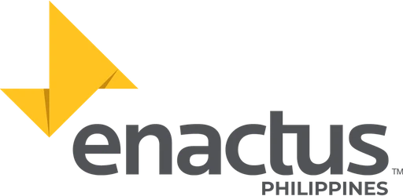</span><span class="vw-text"><span class="vw-name">Enactus Philippines (national competition → Enactus World Cup)<span class="vw-flag" aria-label="has internal remarks">⚠</span></span><span class="vw-sub">National</span></span></button>
      <button class="vw-item has-rem" data-src="fowler-global-social-innovation-challenge.html" data-k="fowler global social innovation challenge (gsic) competition international" data-f1="Competition" data-f2="International" title="Fowler Global Social Innovation Challenge (GSIC)

⚠ Internal remarks (not shown on the page):
• ⚠️ Older pages on the USD site still cite &quot;USD 50,000+&quot;. The higher USD 100,000 figure comes from the April 2026 official release and supersedes it.
• ELIGIBILITY — working assumption: OPEN.
• 🔎 Flagged for future investigation. This is based on reading the sign-up flow, not a written confirmation from USD. Confirm with the Center for Peace and Commerce before making it the centrepiece of a student campaign — but it is safe to surface as an opportunity.
• Verified July 9, 2026. Award pool confirmed via the April 2026 official release. Eligibility scope is contradictory across sources and is flagged for confirmation.
• Fit for Startupreneur students: Strong for college teams. Non-dilutive funding from a USD 100,000 pool , an explicitly social-impact brief, and a genuinely international field (15 countries in 2026). Now confirmed open to students at any university worldwide, so Philippine college teams can "><span class="vw-thumb">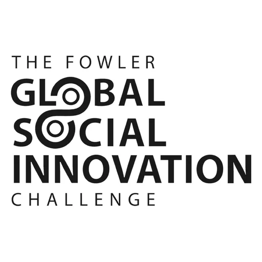</span><span class="vw-text"><span class="vw-name">Fowler Global Social Innovation Challenge (GSIC)<span class="vw-flag" aria-label="has internal remarks">⚠</span></span><span class="vw-sub">International</span></span></button>
      <button class="vw-item has-rem" data-src="hkust-one-million-international-student-track.html" data-k="hkust one million — international student track competition international" data-f1="Competition" data-f2="International" title="HKUST One Million — International Student Track

⚠ Internal remarks (not shown on the page):
• Verified July 9, 2026.
• Five days out.
• five days out.
• Verified July 9, 2026 against HKUST&#x27;s official cash-awards and eligibility pages.
• Fit for Startupreneur students: Excellent, and immediately actionable for college teams. Non-dilutive, real cash, travel funded, and — crucially — a track designed for non-local students, so Filipino teams compete against other international students rather than HKUST insiders. The company-r"><span class="vw-thumb">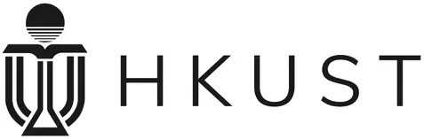</span><span class="vw-text"><span class="vw-name">HKUST One Million — International Student Track<span class="vw-flag" aria-label="has internal remarks">⚠</span></span><span class="vw-sub">International</span></span></button>
      <button class="vw-item has-rem" data-src="james-dyson-award-philippines.html" data-k="james dyson award — philippines competition international" data-f1="Competition" data-f2="International" title="James Dyson Award — Philippines

⚠ Internal remarks (not shown on the page):
• Verified July 9, 2026.
• ⚠️ Confirm against the official link.
• Verified July 9, 2026 against the official site and Philippine press. Peso prize figures (₱398,280 national / ₱2,390,230 international) are as published in the 2026 Philippine announcements.
• Fit for Startupreneur students: Excellent — for college engineering/design teams, and urgent. This is a rare combination: genuinely open to Filipinos, non-dilutive , with a dedicated national prize (₱398,280) that a Philippine team can realistically win rather than competing head-on with the"><span class="vw-thumb">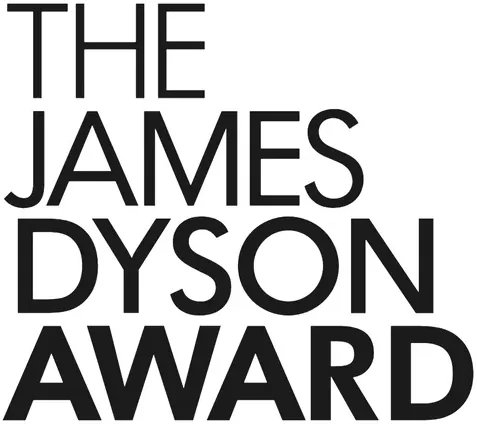</span><span class="vw-text"><span class="vw-name">James Dyson Award — Philippines<span class="vw-flag" aria-label="has internal remarks">⚠</span></span><span class="vw-sub">International</span></span></button>
      <button class="vw-item has-rem" data-src="nasa-space-apps-challenge.html" data-k="nasa space apps challenge competition international" data-f1="Competition" data-f2="International" title="NASA Space Apps Challenge

⚠ Internal remarks (not shown on the page):
• ⚠️ Confirm the current year&#x27;s dates and the nearest Philippine host location.
• Verified July 9, 2026. No-minimum-age policy and the under-18 guardian requirement confirmed on the official FAQ.
• Fit for Startupreneur students: Excellent across every age band Serial Disruptors teaches — the only entry that works for elementary, high school, college, and professionals simultaneously. Local Philippine host events remove travel cost entirely. It teaches build-under-pressure rather than "><span class="vw-thumb">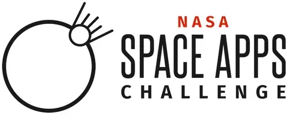</span><span class="vw-text"><span class="vw-name">NASA Space Apps Challenge<span class="vw-flag" aria-label="has internal remarks">⚠</span></span><span class="vw-sub">International</span></span></button>
      <button class="vw-item has-rem" data-src="nfte-world-series-of-innovation.html" data-k="nfte world series of innovation competition international" data-f1="Competition" data-f2="International" title="NFTE World Series of Innovation

⚠ Internal remarks (not shown on the page):
• ⚠️ Verify each challenge&#x27;s deadline individually — they do not share one date.
• Verified July 9, 2026. Age brackets (Impact 13–24, Imagination 5–12) and prize range confirmed.
• Fit for Startupreneur students: Excellent as a curriculum-embedded activity across the whole BED range. The brief-based format (solve a defined SDG challenge) maps neatly onto a lesson plan, prizes are small but achievable, and multiple challenges per year mean repeated shots. Weaker as a fl"><span class="vw-thumb">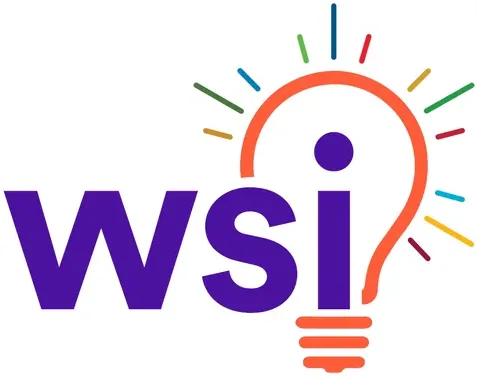</span><span class="vw-text"><span class="vw-name">NFTE World Series of Innovation<span class="vw-flag" aria-label="has internal remarks">⚠</span></span><span class="vw-sub">International</span></span></button>
      <button class="vw-item has-rem" data-src="startup-world-cup.html" data-k="startup world cup (philippines regional) competition national" data-f1="Competition" data-f2="National" title="Startup World Cup (Philippines Regional)

⚠ Internal remarks (not shown on the page):
• ⚠️ Confirm the next PH regional date and application window.
• Fit for Startupreneur students: Strong. A high-visibility global stage open to early founders."><span class="vw-thumb"></span><span class="vw-text"><span class="vw-name">Startup World Cup (Philippines Regional)<span class="vw-flag" aria-label="has internal remarks">⚠</span></span><span class="vw-sub">National</span></span></button>
      <button class="vw-item has-rem" data-src="technovation-girls.html" data-k="technovation girls competition international" data-f1="Competition" data-f2="International" title="Technovation Girls

⚠ Internal remarks (not shown on the page):
• ⚠️ Verify current prize amounts per cycle.
• ⚠️ Confirm the current season&#x27;s dates.
• Verified July 9, 2026. Age range (8–18, assessed Aug 1), gender eligibility, and PH focus-country status confirmed.
• Fit for Startupreneur students: Excellent and unusually broad — reaches ages 8–18. It is the only opportunity found that touches elementary and junior high , not just senior high. The mentor structure maps directly onto a Startupreneur teacher. The Philippines is already a Technovation focus"><span class="vw-thumb">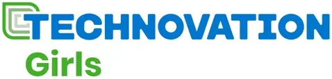</span><span class="vw-text"><span class="vw-name">Technovation Girls<span class="vw-flag" aria-label="has internal remarks">⚠</span></span><span class="vw-sub">International</span></span></button>
      <button class="vw-item has-rem" data-src="zayed-sustainability-prize.html" data-k="zayed sustainability prize competition international" data-f1="Competition" data-f2="International" title="Zayed Sustainability Prize

⚠ Internal remarks (not shown on the page):
• ⚠️ Confirm the exact window on the official page.
• Verified July 9, 2026. The Global High Schools category (USD 150,000 across six regions) is confirmed on the official site.
• Fit for Startupreneur students: Exceptional — and it is the school that wins, not just the team. USD 150,000 (roughly PHP 8.7M) paid to a partner school to expand a student-led sustainability project is a compelling proposition to put in front of a principal. It is also a strong partnership "><span class="vw-thumb">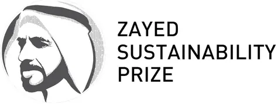</span><span class="vw-text"><span class="vw-name">Zayed Sustainability Prize<span class="vw-flag" aria-label="has internal remarks">⚠</span></span><span class="vw-sub">International</span></span></button>

      <div class="vw-empty" id="vwEmpty" style="display:none">No matches. Try clearing a filter.</div>
    </nav>
  </aside>
  <iframe class="vw-frame" name="vwframe" id="vwframe" src="startup-grant-fund-dost-pcaarrd.html" title="Detail preview"></iframe>
</div>
<script>
  var items=document.querySelectorAll('.vw-item');
  function vwPick(el){document.querySelectorAll('.vw-item.active').forEach(function(a){a.classList.remove('active')});el.classList.add('active');document.getElementById('vwframe').src=el.dataset.src;}
  items.forEach(function(el){el.addEventListener('click',function(){vwPick(el)})});
  if(items.length)items[0].classList.add('active');
  var TOTAL=items.length;
  function vwVal(id){var e=document.getElementById(id);return e?e.value:'';}
  function vwApply(){
    var q=(vwVal('vwSearch')||'').toLowerCase(), f1=vwVal('vwF1'), f2=vwVal('vwF2'), shown=0;
    document.querySelectorAll('.vw-item').forEach(function(el){
      var ok = el.dataset.k.indexOf(q)>-1
            && (!f1 || el.dataset.f1===f1)
            && (!f2 || el.dataset.f2===f2);
      el.style.display = ok ? '' : 'none';
      if(ok) shown++;
    });
    document.querySelectorAll('.vw-group').forEach(function(g){
      var n=g.nextElementSibling, any=false;
      while(n && n.classList.contains('vw-item')){ if(n.style.display!=='none') any=true; n=n.nextElementSibling; }
      g.style.display = any ? '' : 'none';
    });
    var e=document.getElementById('vwEmpty'); if(e) e.style.display = shown ? 'none' : '';
    var c=document.getElementById('vwCount');
    if(c) c.textContent = (shown===TOTAL) ? TOTAL+' entries' : shown+' of '+TOTAL+' shown';
  }
  function vwReset(){var s=document.getElementById('vwSearch');if(s)s.value='';
    ['vwF1','vwF2'].forEach(function(i){var e=document.getElementById(i);if(e)e.value='';});vwApply();}
  vwApply();
</script>
</body></html>
